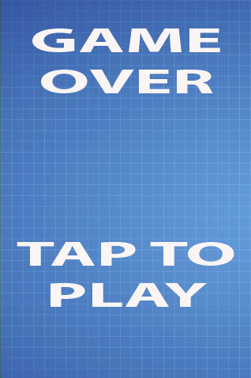
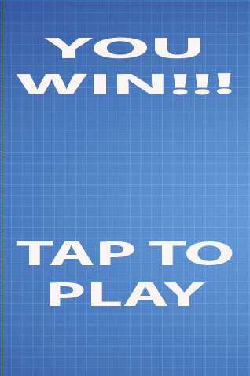

Победа или поражение
В Foxnoid теперь можно играть, но вы не можете выиграть или проиграть. В этой главе мы собираемся решить этот вопрос, добавив в игру ту и другую механику.
Победа и поражение важные аспекты игр. Вы можете делать игры только с одним из этих пунктов. Игра со сценариями без победы — это игры, где выигрыш, как правило, выражается в том, кто дольше продержался перед поражением. Игры без сценария проигрыша характерны в наше время, особенно на мобильных телефонах. Это игры, где вы можете играть вечно, пока выигрываете или даже, в некоторых случаях, игры, в которых вы можете потратить реальные деньги, чтобы повысить уровень или купить апгрейды.
Flappy Bird — игра без сценария победы (по крайней мере, мне об этом неизвестно). В основном такой тип игр работает очень хорошо, если они жёсткие и используют список лидеров, где игроки могут конкурировать друг с другом за лучший результат.
Angry Birds является своего рода игрой, где вы на деле не можете проиграть, просто застрянете на одном уровне до тех пор, пока не пройдёте его. Такое поведение распространено в мобильных аркадах/головоломках, которые, в основном, стали стандартной вещью в наши дни.
В Foxnoid мы собираемся реализовать как сценарий победы, так и сценарий поражения.
Сценарий окончания игры
Окончание игры произойдет, как только игрок теряет все жизни. Первоначальное число жизней устанавливается функцией initWorld() и обновляется при необходимости функцией ballCollidesWithGround(). Всё что нам надо сделать — это проверить, что у игрока ноль жизней и при необходимости переключиться в новое состояние игры с именем GameOver. Давайте изменим эту функцию.
game.js: функция ballCollidesWithBlock() с переключателем
ballCollidesWithGround: function() {
if (this.ball.y >= 470) {
this.playerLives -= 1;
this.resetBall();
}
/*
Обновляем отображение жизней
*/
this.livesDisplay.setText("Lives: " + this.playerLives);
if (this.playerLives === 0) {
this.state.start("GameOver");
}
}Важной частью является строка this.state.start ("GameOver"), которая переключает в новое состояние. Наше новое состояние во время игры будет выглядеть следующим образом.

Экран завершения игры Foxnoid
Мы используем тот же фон, что и в самой игре с двумя рисунками для текста. Нам нужно добавить эти изображения в состояние Preload, так что для этого отредактируем preload.js.
preload.js: игровое состояние для загрузки наших ассетов
GameStates.Preloader = {
preload: function() {
this.load.image('background', 'assets/background.jpg');
this.load.image('player', 'assets/player.png');
this.load.image('ball', 'assets/ball.png');
this.load.image('block', 'assets/block.png');
this.load.image('gameover', 'assets/gameover.png');
this.load.image('taptoplay', 'assets/taptoplay.png');
},
create: function(){
this.state.start('Game');
}
};Как вы видите, мы просто добавили два изображения в функцию preload(), так что они доступны в нашем новом игровом состоянии при загрузке. Говоря о игровых состояния нам нужно проделать некоторые шаги при создании нового. Вначале следует создать новый файл. Назовём его game_over.js и поместим в папку js.
Мы должны включить его в index.html, как показано ниже.
index.html: теперь включает игровое состояние GameOver
<!DOCTYPE html>
<html>
<head>
<meta charset="UTF-8" />
<title>Foxnoid Game</title>
<link rel="stylesheet" href="css/style.css" />
<script defer src="js/phaser.min.js"></script>
<script src="js/init.js"></script>
<script defer src="js/preload.js"></script>
<script defer src="js/game.js"></script>
<script defer src="js/game_over.js"></script>
</head>
<body>
<div id="game"></div>
</body>
</html>После включения этого файла в HTML нужно зарегистрировать состояние в init.js как показано ниже.
init.js: с новым состоянием GameOver
var GameStates = {}; // <-- Объект для хранения всех наших игровых состояний
document.addEventListener("DOMContentLoaded", function() {
// Портретная ориентация игры
var width = 320;
var height = 480;
var game = new Phaser.Game(width, height, Phaser.CANVAS, "game");
// Добавляем игровые состояния
game.state.add('Preloader', GameStates.Preloader);
game.state.add('Game', GameStates.Game);
game.state.add('GameOver', GameStates.GameOver);
// Запускаем состояние Preloader
game.state.start('Preloader');
});После завершения этих шагов мы можем писать код game_over.js.
game_over.js: игрок проиграл, как грустно
GameStates.GameOver = {
create: function() {
// Добавляем фон
this.add.sprite(0, 0, 'background');
// Добавляем сообщение
this.add.sprite(20, 30, 'gameover');
// Добавляем кнопку для продолжения игры
this.add.sprite(20, 300, 'taptoplay');
},
update: function() {
/**
* Мы просто хотим отследить нажатие.
* Если оно произошло, то переключаемся обратно в
* игровое состояние и начинаем игру заново.
*/
if (this.input.pointer1.isDown) {
this.state.start('Game');
}
}
};Это новое игровое состояние довольно простое. В create() мы строим экран с нашими сообщениями, а в update() продолжаем проверку прикосновения к экрану. Если игрок касается экрана, то переключаемся в игровое состояние Game, которое перезапускает игру.
Сценарий выигрыша
Сценарий выигрыша будет таким же, как и сценарий поражения, но с другими изображениями, как показано ниже.

Игрок выиграл!
Вначале добавим новое изображение в состоянии Preload.
preload.js: игровое состояние для загрузки наших ассетов
GameStates.Preloader = {
preload: function() {
this.load.image('background', 'assets/background.jpg');
this.load.image('player', 'assets/player.png');
this.load.image('ball', 'assets/ball.png');
this.load.image('block', 'assets/block.png');
this.load.image('gameover', 'assets/gameover.png');
this.load.image('taptoplay', 'assets/taptoplay.png');
this.load.image('gamewin', 'assets/gamewin.png');
},
create: function(){
this.state.start('Game');
}
};И создадим файл game_win.js в папке js. Мы должны зарегистрировать это новое игровое состояние в init.js и добавить его в index.html.
index.html: теперь включает в себя состояние GameWin
<!DOCTYPE html>
<html>
<head>
<meta charset="UTF-8" />
<title>Foxnoid Game</title>
<link rel="stylesheet" href="css/style.css" />
<script defer src="js/phaser.min.js"></script>
<script src="js/init.js"></script>
<script defer src="js/preload.js"></script>
<script defer src="js/game.js"></script>
<script defer src="js/game_over.js"></script>
<script defer src="js/game_win.js"></script>
</head>
<body>
<div id="game"></div>
</body>
</html>После включения этого файла в HTML нам нужно зарегистрировать состояние в init.js как показано ниже.
init.js: с новым состоянием GameWin
var GameStates = {}; // <-- Объект для хранения всех наших игровых состояний
document.addEventListener("DOMContentLoaded", function() {
// Портретная ориентация игры
var width = 320;
var height = 480;
var game = new Phaser.Game(width, height, Phaser.CANVAS, "game");
// Добавляем имеющиеся игровые состояния
game.state.add('Preloader', GameStates.Preloader);
game.state.add('Game', GameStates.Game);
game.state.add('GameOver', GameStates.GameOver);
game.state.add('GameWin', GameStates.GameWin);
// Запускаем состояние Preloader
game.state.start('Preloader');
});Как только это сделано можем приступать к коду файла game_win.js.
game_win.js: игрок выиграл!
GameStates.GameWin = {
create: function() {
// Добавляем фон
this.add.sprite(0, 0, 'background');
// Добавляем сообщение
this.add.sprite(20, 30, 'gamewin');
// Добавляем кнопку для продолжения игры
this.add.sprite(20, 300, 'taptoplay');
},
update: function() {
/**
* Мы просто хотим отследить нажатие.
* Если оно произошло, то переключаемся обратно в
* игровое состояние и начинаем игру заново.
*/
if (this.input.pointer1.isDown) {
this.state.start('Game');
}
}
};Мы создали все файлы необходимые для победы в игре, но также следует добавить условие в game.js. Игрок побеждает, как только все блоки удалены из игры. Лучшее место для проверки это update() после проверки столкновения, уничтожающего блоки. Давайте добавим функцию в этот файл.
game.js: новая функция для проверки состояния GameWin
checkGameWin: function () {
if (this.blocks.countLiving() === 0) {
this.state.start("GameWin");
}
}Вызываем this.blocks.countLiving() из Phaser.Group, оно возвращает количество доступных спрайтов в данной группе. Поскольку каждый раз при столкновении с блоком мы вызываем kill(), то функция возвратит ноль, как только все блоки исчезнут. Когда это произойдёт, мы переключаемся в сценарий выигрыша, который работает аналогично окончанию игры.
Нужно добавить это в функцию update().
game.js: новая функция update()
update: function() {
this.handleTouchInput();
this.handleKeyboardInput();
this.checkHitWithBlocks();
this.checkHitWithPlayer();
this.ballCollidesWithGround();
this.checkGameWin();
}Теперь вы можете играть, побеждать и проигрывать!
Резюме
В этой главе мы добавили в игру механику для победы и поражения. В следующей главе мы рассмотрим, как удержать игроков, привлекая их дополнительными уровнями игры.

Все материалы сайта доступны по лицензии Creative Commons «Attribution-NonCommercial» («Атрибуция — Некоммерческое использование») 4.0 Всемирная, если не указано иное.